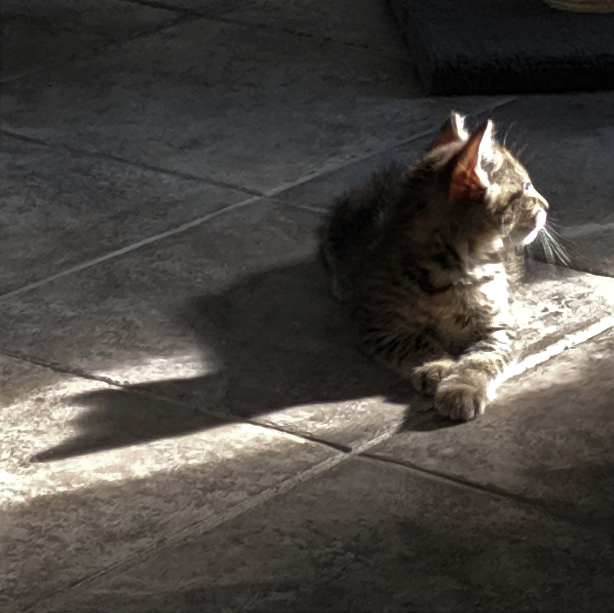

May I present, Ivy, Diego, and their mom - Momma Cat! I foster kittens for the local shelter, so I don't own any of these cats. That said, I get to see them grow up, and that's worth the price of having to let them go. As for the blurry pictures - I've tried telling them a million times, but hyper-active kittens just won't sit still!



In Exhibit B, we have Salem and Misty, I bet you can guess who's who.